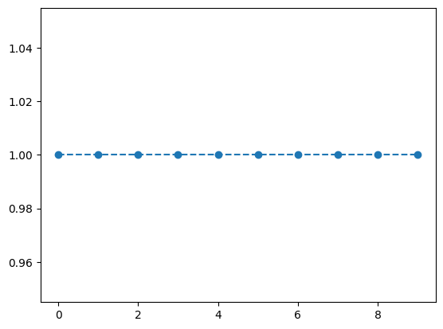
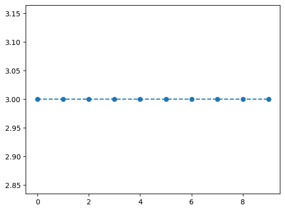

#!pip install git+https://github.com/guebin/mp2024pkg.git08wk-2: numpy와 torch의 차이

1. 강의영상
2. Imports
import numpy as np
import torch
import mp2024pkg
import transformers
import datasets
import matplotlib.pyplot as plt/home/cgb3/anaconda3/envs/hf/lib/python3.12/site-packages/tqdm/auto.py:21: TqdmWarning: IProgress not found. Please update jupyter and ipywidgets. See https://ipywidgets.readthedocs.io/en/stable/user_install.html
from .autonotebook import tqdm as notebook_tqdm
The cache for model files in Transformers v4.22.0 has been updated. Migrating your old cache. This is a one-time only operation. You can interrupt this and resume the migration later on by calling `transformers.utils.move_cache()`.
0it [00:00, ?it/s]3. numpy와 torch의 비교
- 파이썬입문수준의 질문: numpy랑 list의 차이가 뭔가..?
- 기계학습활용수준의 질문: numpy랑 torch의 차이가 뭔가..?
A. 공통점
- 기본마인드: numpy에서 가능한건 torch에서도 가능하다고 생각하면 된다.
- 벡터선언 후 브로드캐스팅
np.array([1,2,3]) + 1array([2, 3, 4])torch.tensor([1,2,3]) + 1tensor([2, 3, 4])- 형태변환
torch.tensor의 형태변환
tsr1 = torch.tensor([1,2,3])
print(
f"텐서값 = {tsr1}\n"
f"shape = {tsr1.shape}"
)텐서값 = tensor([1, 2, 3])
shape = torch.Size([3])tsr2 = tsr1.reshape(3,1)
print(
f"텐서값 = {tsr2}\n"
f"shape = {tsr2.shape}"
)텐서값 = tensor([[1],
[2],
[3]])
shape = torch.Size([3, 1])tsr3 = tsr1.reshape(1,3)
print(
f"텐서값 = {tsr3}\n"
f"shape = {tsr3.shape}"
)
ensor([1, 2, 3])텐서값 = tensor([[1, 2, 3]])
shape = torch.Size([1, 3])np.array의 형태변환
np.array([1,2,3]).reshape(1,3)array([[1, 2, 3]])np.array([1,2,3]).reshape(3,1)array([[1],
[2],
[3]])- 기타함수들도 비슷하게 운용됨
torch.tensor에서의 stack
tsr1 = torch.tensor([1,2,3])
tsr2 = torch.tensor([2,3,4])torch.stack([tsr1,tsr2],axis=0)tensor([[1, 2, 3],
[2, 3, 4]])torch.stack([tsr1,tsr2],axis=1)tensor([[1, 2],
[2, 3],
[3, 4]])np.array에서의 stack
arr1 = np.array([1,2,3])
arr2 = np.array([2,3,4])np.stack([arr1,arr2],axis=0)array([[1, 2, 3],
[2, 3, 4]])np.stack([arr1,arr2],axis=1)array([[1, 2],
[2, 3],
[3, 4]])B. 차이점1 – 기본자료형
- 1/3와 같은 숫자를 저장할때 넘파이의 경우 기본 data type은 float64임.
a = np.array(1/3)
a, a.dtype(array(0.33333333), dtype('float64'))print(
f"값: {a}\n"
f"dtype: {a.dtype}"
)값: 0.3333333333333333
dtype: float64- 그런데 텐서는 기본 data type이 float32임. (그래서 정확하게 저장되지 않음)
a = torch.tensor(1/3)
a, a.dtype(tensor(0.3333), torch.float32)print(
f"값: {a}\n"
f"dtype: {a.dtype}"
)값: 0.3333333432674408
dtype: torch.float32- 억지로 저장할 수는 있음 (그런데 이럴 경우 dtype 꼬리표가 붙음)
a = torch.tensor(1/3,dtype=torch.float64)
a, a.dtype(tensor(0.3333, dtype=torch.float64), torch.float64)print(
f"값: {a}\n"
f"dtype: {a.dtype}"
)값: 0.3333333333333333
dtype: torch.float64- 자료형 변환시 이러한 기분나쁜 꼬리표가 붙을 수 있음
# 예시1
a = np.array(1/3)
aarray(0.33333333)torch.tensor(a)tensor(0.3333, dtype=torch.float64)#
# 예시2
a = torch.tensor(1/3)
atensor(0.3333)np.array(a)array(0.33333334, dtype=float32)#
- torch의 경우 float64로 저장되면 모델이 안돌아갈 수 있으니 (메모리를 많이 차지해서) 반드시 dtype을 float32로 바꾸는 습관을 가지면 좋음
a = np.array(1/3)
tsr = torch.tensor(a)
tsrtensor(0.3333, dtype=torch.float64)tsr.float() # 바꾸는방법1tensor(0.3333)tsr.to(torch.float32) # 바꾸는방법2tensor(0.3333)- numpy는 할줄알죠?
arr = np.array(1/3,dtype=np.float32)
arrarray(0.33333334, dtype=float32)arr.astype(np.float64)array(0.33333334)- torch에서 data type을 바꿔주는 메소드는 상당히 유용합니다. (아까 말했듯이 형식을 잘 못 맞추면 코드가 안돌아가요)
a = torch.tensor([1,0,1])
a, a.float()(tensor([1, 0, 1]), tensor([1., 0., 1.]))a = torch.tensor([1,0,1])
a, a.bool()(tensor([1, 0, 1]), tensor([ True, False, True]))a = torch.tensor([1.0,0,1])
a, a.long()(tensor([1., 0., 1.]), tensor([1, 0, 1]))- torch에서 data type 이 중요한이유?
- 의미상 맞는 코드인데,
dtype이 안맞으면 실행이 안될 수 있다.
C. 차이점2 – 메소드차이
- torch 와 numpy의 메소드(=자료에 내장된 특수함수)들이 완전히 같지는 않음.
tsr = torch.tensor([1,2,3])
tsrtensor([1, 2, 3])tsr.numpy() # np.array로 바꿔주는 메소드array([1, 2, 3])tsr.float() # 자료형을 float으로 바꿔주는 메소드tensor([1., 2., 3.])arr = np.array([1,2,3])
arrarray([1, 2, 3])arr.numpy()AttributeError: 'numpy.ndarray' object has no attribute 'numpy'arr.float()AttributeError: 'numpy.ndarray' object has no attribute 'float'D. 차이점3 – 미분연산지원 (\(\star\))
# 예제1 – 파이썬을 기본문법을 이용한 미분
def f(x):
return x**2a = 2
h = 0.001
(f(a+h)-f(a))/h 4.000999999999699#
# 예제2 – torch를 이용한 미분
def f(x):
return x**2
a = torch.tensor(2.0, requires_grad=True)
b = f(a)
b.backward()
a.gradtensor(4.)#
# 예제3
a = torch.tensor(3.0, requires_grad=True)
a # 토치텐서... 그런데 이제 미분꼬리표를 곁들인..tensor(3., requires_grad=True)print(a.grad) # a에서의 기울기Noneb = f(a) # b=a**2
b # 여기에도 꼬리표같은게 붙어있음..tensor(9., grad_fn=<PowBackward0>)c = 2*b # c = 2*a**2
c # 여기에도 꼬리표같은게 붙어있음.. tensor(18., grad_fn=<MulBackward0>)c.backward() # c=2b=2a**2 를 미분하세요... 뭐로??? 미분꼬리표의 근원인 a로!a,a.grad # a값과 a에서의 기울기 (tensor(3., requires_grad=True), tensor(12.))- \(b=f(a)=a^2\)
- \(c=2b=2f(a)=2a^2\)
- \(c\)를 \(a\)로 미분하면 \(4a\)가 된다..
#
# 예제4
a = torch.tensor(3.0, requires_grad=True)
atensor(3., requires_grad=True)print(a.grad)Noneb = f(a)
btensor(9., grad_fn=<PowBackward0>)c = 2*bb.backward() # b를미분하세요.. 뭐로?? 미분꼬리표의 근원인 a로..a, a.grad(tensor(3., requires_grad=True), tensor(6.))- \(a=3\)
- \(b=f(a)=a^2\)
- \(b\)를 \(a\)로 미분하면 \(2a\) 가 된다..
#
# 예제5
a = torch.tensor(3.0,requires_grad=True)
a # 토치텐서.. 미분꼬리표가 곁들여진.. tensor(3., requires_grad=True)b = f(a) # 미분꼬리표가 b까지 따라옴
btensor(9., grad_fn=<PowBackward0>)c = 2*b # 미분꼬리표가 c까지 따라옴
ctensor(18., grad_fn=<MulBackward0>)c = c.detach() # c에서 미분꼬리표를 제거
ctensor(18.)c.backward() # c=2b=2f(a) 를 미분하세요.. 뭐로?? 꼬리표의 근원으로..? 근데 꼬리표가 없어?? --> 미분불가능RuntimeError: element 0 of tensors does not require grad and does not have a grad_fnb.backward()a,a.grad(tensor(3., requires_grad=True), tensor(6.))#
E. 차이점4 – cuda 연산지원 (\(\star\))
- torch는 cuda을 지원해서 좋다.. (그런데 쓰는 입장에선 불편하다)
- torch.tensor를 선언하고 그 값들을 cuda로 혹은 cpu로 옮겨보자..
a = torch.tensor([1.0, 2.0, 3.0])
b = torch.tensor([2.0, 3.0, 4.0])
a,b(tensor([1., 2., 3.]), tensor([2., 3., 4.]))a.to("cuda") tensor([1., 2., 3.], device='cuda:0')a # a.to("cuda") 를 실행해도 a값 자체가 변하는건 아님.. tensor([1., 2., 3.])a_cuda = a.to("cuda:0")
b_cuda = b.to("cuda:0")
a_cuda,b_cuda(tensor([1., 2., 3.], device='cuda:0'), tensor([2., 3., 4.], device='cuda:0'))a,b,a_cuda,b_cuda(tensor([1., 2., 3.]),
tensor([2., 3., 4.]),
tensor([1., 2., 3.], device='cuda:0'),
tensor([2., 3., 4.], device='cuda:0'))a_cuda.to("cpu"),b_cuda.to("cpu") # *.to("cpu") 도 *의 값자체를 변화시키지 않음. (tensor([1., 2., 3.]), tensor([2., 3., 4.]))- 구분을 위해서 변수이름을 *_cpu, *_cuda와 같이정의하자.
a_cpu = torch.tensor([1.0, 2.0, 3.0])
b_cpu = torch.tensor([2.0, 3.0, 4.0])
a_cuda = torch.tensor([1.0, 2.0, 3.0]).to("cuda")
b_cuda = torch.tensor([2.0, 3.0, 4.0]).to("cuda")a_cpu,b_cpu,a_cuda,b_cuda(tensor([1., 2., 3.]),
tensor([2., 3., 4.]),
tensor([1., 2., 3.], device='cuda:0'),
tensor([2., 3., 4.], device='cuda:0'))- cuda는 cuda끼리, cpu는 cpu끼리 연산가능
a_cpu + b_cputensor([3., 5., 7.])- cpu끼리 연산하면 연산가능하고, 결과도 cpu에…
a_cpu + b_cudaRuntimeError: Expected all tensors to be on the same device, but found at least two devices, cuda:0 and cpu!a_cuda + b_cpuRuntimeError: Expected all tensors to be on the same device, but found at least two devices, cuda:0 and cpu!a_cuda + b_cudatensor([3., 5., 7.], device='cuda:0')- cuda끼리 연산하면 연산가능하고, 그 결과도 cuda에 존재함.
3. dtype, 차원
# 예제1 – dtype 안맞으면 맞는 코드 같은데 에러가 나는 경우가 많다.
# 올바른코드
def f(x):
return x**2
a = torch.tensor(2.0, requires_grad=True)
b = f(a) # b=a^2
b.backward() # b를 a로 미분하라
a.grad # a에서의 기울값 tensor(4.)# 틀린코드
def f(x):
return x**2
a = torch.tensor(2, requires_grad=True)
b = f(a) # b=a^2
b.backward() # b를 a로 미분하라
a.grad # a에서의 기울값 RuntimeError: Only Tensors of floating point and complex dtype can require gradientsa = torch.tensor(2, requires_grad=True) # 이 부분이 실행안됨..RuntimeError: Only Tensors of floating point and complex dtype can require gradientsa = torch.tensor(2.0, requires_grad=True) # 이렇게 바꾸어야함..
# 나중에 a로 미분하기 위해서 미분꼬리표를 쓰고 싶음.
# 그런데 미분꼬리표를 쓸려면 a의 dtype을 float으로 해야함코드잘짜는 사람은 이런 형식을 잘 맞추는 듯 합니다..
#
# 예제2 – IMDB자료에서의 모델을 다시 살펴보자..
예전강의노트보고 준비
imdb = datasets.load_dataset("imdb")
model_path = "distilbert/distilbert-base-uncased"
tokenizer = transformers.AutoTokenizer.from_pretrained(model_path)
model = transformers.AutoModelForSequenceClassification.from_pretrained(
model_path, num_labels=2
)Some weights of DistilBertForSequenceClassification were not initialized from the model checkpoint at distilbert/distilbert-base-uncased and are newly initialized: ['classifier.bias', 'classifier.weight', 'pre_classifier.bias', 'pre_classifier.weight']
You should probably TRAIN this model on a down-stream task to be able to use it for predictions and inference.imdb['train']['text']의 구조파악
mp2024pkg.show_list(imdb['train']['text'])Level 1 - Type: list, Length: 25000, Content: ['I rented I AM CURIOUS-Y ... rocker) are highlights.']
Level 2 - Type: str, Length: 1640, Content: 'I rented I AM CURIOUS-YE ... \'t have much of a plot.'
Level 2 - Type: str, Length: 1294, Content: '"I Am Curious: Yellow" i ... ides of women\'s bodies.'
...
Level 2 - Type: str, Length: 528, Content: "If only to avoid making ... ree growing.<br /><br />"
Level 2 - Type: str, Length: 706, Content: "This film was probably i ... s time, and place. 2/10."
Level 2 - Type: str, Length: 1814, Content: 'Oh, brother...after hear ... t over with.<br /><br />'
Level 2 - Type: str, Length: 4066, Content: '\'The Adventures Of Barr ... s with the unemployed...'
Level 2 - Type: str, Length: 319, Content: 'The story centers around ... Crocker) are highlights.'text의 길이가 가장 짧은 observation
np.array([len(l) for l in imdb['train']['text']]).argmin()10925single_observation = imdb['train'][10925]
single_observation {'text': 'This movie is terrible but it has some good effects.', 'label': 0}- 전처리
tokenizer(single_observation['text']){'input_ids': [101, 2023, 3185, 2003, 6659, 2021, 2009, 2038, 2070, 2204, 3896, 1012, 102], 'attention_mask': [1, 1, 1, 1, 1, 1, 1, 1, 1, 1, 1, 1, 1]}mp2024pkg.show_dict(
tokenizer(single_observation['text'])
)Dictionary Overview:
Total keys: 2
Keys: ['input_ids', 'attention_mask']
1. Key: 'input_ids'
- Type: list
- Length: 13
- Values: [101, 2023, 3185, 2003, 6659, 2021, 2009, 2038, 2070, 2204, 3896, 1012, 102]
2. Key: 'attention_mask'
- Type: list
- Length: 13
- Values: [1, 1, 1, 1, 1, 1, 1, 1, 1, 1, 1, 1, 1]
- 모델인풋1 – 차원이 맞지 않음.. (모델은 배치형태 입력을 기대해요)
model_input = {
'input_ids':torch.tensor([101, 2023, 3185, 2003, 6659, 2021, 2009, 2038, 2070, 2204, 3896, 1012, 102]),
'attention_mask':torch.tensor([1, 1, 1, 1, 1, 1, 1, 1, 1, 1, 1, 1, 1]),
'labels': torch.tensor(0)
}
model(**model_input)RuntimeError: The size of tensor a (13) must match the size of tensor b (512) at non-singleton dimension 1- 모델인풋2 – 이걸 기대함
model_input = {
'input_ids':torch.tensor([[101, 2023, 3185, 2003, 6659, 2021, 2009, 2038, 2070, 2204, 3896, 1012, 102]]),
'attention_mask':torch.tensor([[1, 1, 1, 1, 1, 1, 1, 1, 1, 1, 1, 1, 1]]),
'labels': torch.tensor([0])
}
model(**model_input)SequenceClassifierOutput(loss=tensor(0.5818, grad_fn=<NllLossBackward0>), logits=tensor([[ 0.1516, -0.0852]], grad_fn=<AddmmBackward0>), hidden_states=None, attentions=None)- 모델인풋3 – 틀린듯한데 그냥 해주는듯
model_input = {
'input_ids':torch.tensor([[101, 2023, 3185, 2003, 6659, 2021, 2009, 2038, 2070, 2204, 3896, 1012, 102]]),
'attention_mask':torch.tensor([[1, 1, 1, 1, 1, 1, 1, 1, 1, 1, 1, 1, 1]]),
'labels': torch.tensor(0)
}
model(**model_input)SequenceClassifierOutput(loss=tensor(0.5818, grad_fn=<NllLossBackward0>), logits=tensor([[ 0.1516, -0.0852]], grad_fn=<AddmmBackward0>), hidden_states=None, attentions=None)- 모델인풋4 – 라벨은 int형이어야 한다는 강제가 있었음
model_input = {
'input_ids':torch.tensor([[101, 2023, 3185, 2003, 6659, 2021, 2009, 2038, 2070, 2204, 3896, 1012, 102]]),
'attention_mask':torch.tensor([[1, 1, 1, 1, 1, 1, 1, 1, 1, 1, 1, 1, 1]]),
'labels': torch.tensor([0.0])
}
model(**model_input)RuntimeError: expected scalar type Long but found Float- 모델인풋5 – input_ids도 마찬가지로 제약이 있음
model_input = {
'input_ids':torch.tensor([[101.0, 2023, 3185, 2003, 6659, 2021, 2009, 2038, 2070, 2204, 3896, 1012, 102]]),
'attention_mask':torch.tensor([[1, 1, 1, 1, 1, 1, 1, 1, 1, 1, 1, 1, 1]]),
'labels': torch.tensor([0])
}
model(**model_input)RuntimeError: Expected tensor for argument #1 'indices' to have one of the following scalar types: Long, Int; but got torch.FloatTensor instead (while checking arguments for embedding)- 모델인풋6 – attention_mask는 제약이 없음
model_input = {
'input_ids':torch.tensor([[101, 2023, 3185, 2003, 6659, 2021, 2009, 2038, 2070, 2204, 3896, 1012, 102]]),
'attention_mask':torch.tensor([[1, 1.0, 1, 1, 1, 1, 1, 1, 1, 1, 1, 1, 1]]),
'labels': torch.tensor([0])
}
model(**model_input)SequenceClassifierOutput(loss=tensor(0.5818, grad_fn=<NllLossBackward0>), logits=tensor([[ 0.1516, -0.0852]], grad_fn=<AddmmBackward0>), hidden_states=None, attentions=None)attention_mask의 의미는 사실상 True, False임.. 추측해보건데attention_mask값은 실제 인트자체를 쓰는게 아니고 내부적으로 bool로 바꾸는 로짓이 있을듯
#
4. cuda 관리
# 예제1
imdb = datasets.load_dataset("imdb")
model_path = "distilbert/distilbert-base-uncased"
tokenizer = transformers.AutoTokenizer.from_pretrained(model_path)
model = transformers.AutoModelForSequenceClassification.from_pretrained(
model_path, num_labels=2
)
model_input = {
'input_ids': torch.tensor([[101, 2023, 3185, 2003, 6659, 2021, 2009, 2038, 2070, 2204, 3896, 1012, 102]]),
'attention_mask': torch.tensor([[1, 1, 1, 1, 1, 1, 1, 1, 1, 1, 1, 1, 1]]),
'labels': torch.tensor([0])
}Some weights of DistilBertForSequenceClassification were not initialized from the model checkpoint at distilbert/distilbert-base-uncased and are newly initialized: ['classifier.bias', 'classifier.weight', 'pre_classifier.bias', 'pre_classifier.weight']
You should probably TRAIN this model on a down-stream task to be able to use it for predictions and inference.- 원래사용방식
model(**model_input) SequenceClassifierOutput(loss=tensor(0.6082, grad_fn=<NllLossBackward0>), logits=tensor([[0.2919, 0.1141]], grad_fn=<AddmmBackward0>), hidden_states=None, attentions=None)- 이것이 계산되는 이유는
model에 포함된 숫자들과model_input에 있는 숫자들이 둘다 cpu에 있어서..
- model에 포함된 숫자들, 즉 모델의 파라메터는 어디에?
next(model.parameters())Parameter containing:
tensor([[-0.0166, -0.0666, -0.0163, ..., -0.0200, -0.0514, -0.0264],
[-0.0132, -0.0673, -0.0161, ..., -0.0227, -0.0554, -0.0260],
[-0.0176, -0.0709, -0.0144, ..., -0.0246, -0.0596, -0.0232],
...,
[-0.0231, -0.0588, -0.0105, ..., -0.0195, -0.0262, -0.0212],
[-0.0490, -0.0561, -0.0047, ..., -0.0107, -0.0180, -0.0219],
[-0.0065, -0.0915, -0.0025, ..., -0.0151, -0.0504, 0.0460]],
requires_grad=True)- 모델의 파라메터를 cuda로..
model.to("cuda")
next(model.parameters())Parameter containing:
tensor([[-0.0166, -0.0666, -0.0163, ..., -0.0200, -0.0514, -0.0264],
[-0.0132, -0.0673, -0.0161, ..., -0.0227, -0.0554, -0.0260],
[-0.0176, -0.0709, -0.0144, ..., -0.0246, -0.0596, -0.0232],
...,
[-0.0231, -0.0588, -0.0105, ..., -0.0195, -0.0262, -0.0212],
[-0.0490, -0.0561, -0.0047, ..., -0.0107, -0.0180, -0.0219],
[-0.0065, -0.0915, -0.0025, ..., -0.0151, -0.0504, 0.0460]],
device='cuda:0', requires_grad=True)- 주의:
data.to("cuda")는data자체를 변화시키지 않았음. 그런데model.to("cuda")는model자체를 변화시킴
- 아까 계산되던 코드가 거짓말처럼 동작하지 않음
model(**model_input) RuntimeError: Expected all tensors to be on the same device, but found at least two devices, cuda:0 and cpu! (when checking argument for argument index in method wrapper_CUDA__index_select)- 다시 모델의 파라메터를 cpu로..
model.to("cpu") # 모델의 파라메터를 다시 cpu로..DistilBertForSequenceClassification(
(distilbert): DistilBertModel(
(embeddings): Embeddings(
(word_embeddings): Embedding(30522, 768, padding_idx=0)
(position_embeddings): Embedding(512, 768)
(LayerNorm): LayerNorm((768,), eps=1e-12, elementwise_affine=True)
(dropout): Dropout(p=0.1, inplace=False)
)
(transformer): Transformer(
(layer): ModuleList(
(0-5): 6 x TransformerBlock(
(attention): MultiHeadSelfAttention(
(dropout): Dropout(p=0.1, inplace=False)
(q_lin): Linear(in_features=768, out_features=768, bias=True)
(k_lin): Linear(in_features=768, out_features=768, bias=True)
(v_lin): Linear(in_features=768, out_features=768, bias=True)
(out_lin): Linear(in_features=768, out_features=768, bias=True)
)
(sa_layer_norm): LayerNorm((768,), eps=1e-12, elementwise_affine=True)
(ffn): FFN(
(dropout): Dropout(p=0.1, inplace=False)
(lin1): Linear(in_features=768, out_features=3072, bias=True)
(lin2): Linear(in_features=3072, out_features=768, bias=True)
(activation): GELUActivation()
)
(output_layer_norm): LayerNorm((768,), eps=1e-12, elementwise_affine=True)
)
)
)
)
(pre_classifier): Linear(in_features=768, out_features=768, bias=True)
(classifier): Linear(in_features=768, out_features=2, bias=True)
(dropout): Dropout(p=0.2, inplace=False)
)- 이제 또 계산가능함..
model(**model_input) SequenceClassifierOutput(loss=tensor(0.6082, grad_fn=<NllLossBackward0>), logits=tensor([[0.2919, 0.1141]], grad_fn=<AddmmBackward0>), hidden_states=None, attentions=None)- 정리해보자..
모델cpu,데이터cpu,계산결과도cpu
imdb = datasets.load_dataset("imdb")
model_path = "distilbert/distilbert-base-uncased"
tokenizer = transformers.AutoTokenizer.from_pretrained(model_path)
model = transformers.AutoModelForSequenceClassification.from_pretrained(
model_path, num_labels=2
)
model_input = {
'input_ids': torch.tensor([[101, 2023, 3185, 2003, 6659, 2021, 2009, 2038, 2070, 2204, 3896, 1012, 102]]),
'attention_mask': torch.tensor([[1, 1, 1, 1, 1, 1, 1, 1, 1, 1, 1, 1, 1]]),
'labels': torch.tensor([0])
}
model(**model_input)Some weights of DistilBertForSequenceClassification were not initialized from the model checkpoint at distilbert/distilbert-base-uncased and are newly initialized: ['classifier.bias', 'classifier.weight', 'pre_classifier.bias', 'pre_classifier.weight']
You should probably TRAIN this model on a down-stream task to be able to use it for predictions and inference.SequenceClassifierOutput(loss=tensor(0.7082, grad_fn=<NllLossBackward0>), logits=tensor([[0.0562, 0.0861]], grad_fn=<AddmmBackward0>), hidden_states=None, attentions=None)모델cuda,데이터cpu
imdb = datasets.load_dataset("imdb")
model_path = "distilbert/distilbert-base-uncased"
tokenizer = transformers.AutoTokenizer.from_pretrained(model_path)
model = transformers.AutoModelForSequenceClassification.from_pretrained(
model_path, num_labels=2
).to("cuda")
model_input = {
'input_ids': torch.tensor([[101, 2023, 3185, 2003, 6659, 2021, 2009, 2038, 2070, 2204, 3896, 1012, 102]]),
'attention_mask': torch.tensor([[1, 1, 1, 1, 1, 1, 1, 1, 1, 1, 1, 1, 1]]),
'labels': torch.tensor([0])
}
model(**model_input)Some weights of DistilBertForSequenceClassification were not initialized from the model checkpoint at distilbert/distilbert-base-uncased and are newly initialized: ['classifier.bias', 'classifier.weight', 'pre_classifier.bias', 'pre_classifier.weight']
You should probably TRAIN this model on a down-stream task to be able to use it for predictions and inference.RuntimeError: Expected all tensors to be on the same device, but found at least two devices, cuda:0 and cpu! (when checking argument for argument index in method wrapper_CUDA__index_select)모델cpu,데이터cuda
imdb = datasets.load_dataset("imdb")
model_path = "distilbert/distilbert-base-uncased"
tokenizer = transformers.AutoTokenizer.from_pretrained(model_path)
model = transformers.AutoModelForSequenceClassification.from_pretrained(
model_path, num_labels=2
)
model_input = {
'input_ids': torch.tensor([[101, 2023, 3185, 2003, 6659, 2021, 2009, 2038, 2070, 2204, 3896, 1012, 102]]).to("cuda"),
'attention_mask': torch.tensor([[1, 1, 1, 1, 1, 1, 1, 1, 1, 1, 1, 1, 1]]).to("cuda"),
'labels': torch.tensor([0]).to("cuda")
}
model(**model_input)Some weights of DistilBertForSequenceClassification were not initialized from the model checkpoint at distilbert/distilbert-base-uncased and are newly initialized: ['classifier.bias', 'classifier.weight', 'pre_classifier.bias', 'pre_classifier.weight']
You should probably TRAIN this model on a down-stream task to be able to use it for predictions and inference.RuntimeError: Expected all tensors to be on the same device, but found at least two devices, cpu and cuda:0! (when checking argument for argument index in method wrapper_CUDA__index_select)모델cuda,데이터cuda,결과도cuda
imdb = datasets.load_dataset("imdb")
model_path = "distilbert/distilbert-base-uncased"
tokenizer = transformers.AutoTokenizer.from_pretrained(model_path)
model = transformers.AutoModelForSequenceClassification.from_pretrained(
model_path, num_labels=2
).to("cuda")
model_input = {
'input_ids': torch.tensor([[101, 2023, 3185, 2003, 6659, 2021, 2009, 2038, 2070, 2204, 3896, 1012, 102]]).to("cuda"),
'attention_mask': torch.tensor([[1, 1, 1, 1, 1, 1, 1, 1, 1, 1, 1, 1, 1]]).to("cuda"),
'labels': torch.tensor([0]).to("cuda")
}
model(**model_input)Some weights of DistilBertForSequenceClassification were not initialized from the model checkpoint at distilbert/distilbert-base-uncased and are newly initialized: ['classifier.bias', 'classifier.weight', 'pre_classifier.bias', 'pre_classifier.weight']
You should probably TRAIN this model on a down-stream task to be able to use it for predictions and inference.SequenceClassifierOutput(loss=tensor(0.6541, device='cuda:0', grad_fn=<NllLossBackward0>), logits=tensor([[0.1475, 0.0678]], device='cuda:0', grad_fn=<AddmmBackward0>), hidden_states=None, attentions=None)#
5. grad 관리
# 예제1 – 미분꼬리표 제거하고 싶음..
- a에는 꼬리표O, b에는 꼬리표X, a*b는 a로 인한 꼬리표가 유지
a = torch.tensor(3.0,requires_grad=True)
b = torch.tensor([1.0]*10)
a*btensor([3., 3., 3., 3., 3., 3., 3., 3., 3., 3.], grad_fn=<MulBackward0>)- 꼬리표가 없는 b는 plt.plot이 동작하지만 꼬리표가 있는 a*b는 plt.plot이 동작하지 않음
plt.plot(b,'--o') # 꼬리표가 없는 텐서는 그림이 잘 그려짐
plt.plot(b*a,'--o') # 꼬리표가 있는 텐서는 그림을 그릴시 에러남RuntimeError: Can't call numpy() on Tensor that requires grad. Use tensor.detach().numpy() instead.
- a의 꼬리표를 제거하고 돌리자…
plt.plot(b*a.detach(),'--o') # 이런식으로 바꾸면 그림이 그려짐[<matplotlib.lines.Line2D at 0x7d7a911ec050>]
#
# 예제2 – 미분꼬리표를 제거하는 또다른 기능
- 예제1을 아래처럼 실수로 풀었다.
a = torch.tensor(3.0,requires_grad=True)
b = torch.tensor([1.0]*10)plt.plot(a*b.detach(),'--o')RuntimeError: Can't call numpy() on Tensor that requires grad. Use tensor.detach().numpy() instead.
- 아래와 같이 했어야 했는데, 섬세함이 부족했다..
plt.plot((a*b).detach(),'--o')
- 앞으로 섬세하게 코딩하자??
- 앞으로 섬세하기 싫다면?? \(\to\) torch.set_grad_enabled() 이용
모드확인
torch.is_grad_enabled() # 꼬리표를 계산하는 모드..True모드변경
torch.set_grad_enabled(False) <torch.autograd.grad_mode.set_grad_enabled at 0x7d7a911e7c50>다시 모드확인
torch.is_grad_enabled() # 꼬리표를 계산하는 모드..Falsea,b상태 출력
a,b(tensor(3., requires_grad=True),
tensor([1., 1., 1., 1., 1., 1., 1., 1., 1., 1.]))계산
a*btensor([3., 3., 3., 3., 3., 3., 3., 3., 3., 3.])plot
plt.plot(a*b,'--o')
다시모드변경
torch.set_grad_enabled(True) <torch.autograd.grad_mode.set_grad_enabled at 0x7d7aa8bd57f0>모드변경확인
torch.is_grad_enabled() # 꼬리표를 계산하는 모드..Trueplot – 이제 못그림
plt.plot(a*b)RuntimeError: Can't call numpy() on Tensor that requires grad. Use tensor.detach().numpy() instead.
#
# 예제3
model = transformers.AutoModelForSequenceClassification.from_pretrained(
"distilbert/distilbert-base-uncased", num_labels=2
)
model_input = {
'input_ids': torch.tensor([[101, 2023, 3185, 2003, 6659, 2021, 2009, 2038, 2070, 2204, 3896, 1012, 102]]),
'attention_mask': torch.tensor([[1, 1, 1, 1, 1, 1, 1, 1, 1, 1, 1, 1, 1]]),
'labels': torch.tensor([0])
}
model(**model_input)Some weights of DistilBertForSequenceClassification were not initialized from the model checkpoint at distilbert/distilbert-base-uncased and are newly initialized: ['classifier.bias', 'classifier.weight', 'pre_classifier.bias', 'pre_classifier.weight']
You should probably TRAIN this model on a down-stream task to be able to use it for predictions and inference.SequenceClassifierOutput(loss=tensor(0.6591, grad_fn=<NllLossBackward0>), logits=tensor([[0.0998, 0.0304]], grad_fn=<AddmmBackward0>), hidden_states=None, attentions=None)mp2024pkg.show_list(
list(model.parameters())
)
# detach를 하나하나 적용하기에는 너무힘들듯Level 1 - Type: list, Length: 104, Content: [Parameter containing:
te ... 0.], requires_grad=True)]
Level 2 - Type: Parameter, Length: 30522, Content: Parameter containing:
ten ... requires_grad=True)
Level 2 - Type: Parameter, Length: 512, Content: Parameter containing:
ten ... 02]], requires_grad=True)
...
Level 2 - Type: Parameter, Length: 768, Content: Parameter containing:
ten ... 008], requires_grad=True)
Level 2 - Type: Parameter, Length: 768, Content: Parameter containing:
ten ... -02], requires_grad=True)
Level 2 - Type: Parameter, Length: 768, Content: Parameter containing:
ten ... requires_grad=True)
Level 2 - Type: Parameter, Length: 2, Content: Parameter containing:
ten ... requires_grad=True)
Level 2 - Type: Parameter, Length: 2, Content: Parameter containing:
ten ... 0.], requires_grad=True)torch.set_grad_enabled(False)<torch.autograd.grad_mode.set_grad_enabled at 0x7d7a751a9e20>model(**model_input) # 꼬리표가 제거된 출력결과SequenceClassifierOutput(loss=tensor(0.6591), logits=tensor([[0.0998, 0.0304]]), hidden_states=None, attentions=None)torch.set_grad_enabled(True) # 다시 꼬리표를 계산하는 모드로..<torch.autograd.grad_mode.set_grad_enabled at 0x7d7a7475bcb0>model(**model_input) SequenceClassifierOutput(loss=tensor(0.6591, grad_fn=<NllLossBackward0>), logits=tensor([[0.0998, 0.0304]], grad_fn=<AddmmBackward0>), hidden_states=None, attentions=None)#